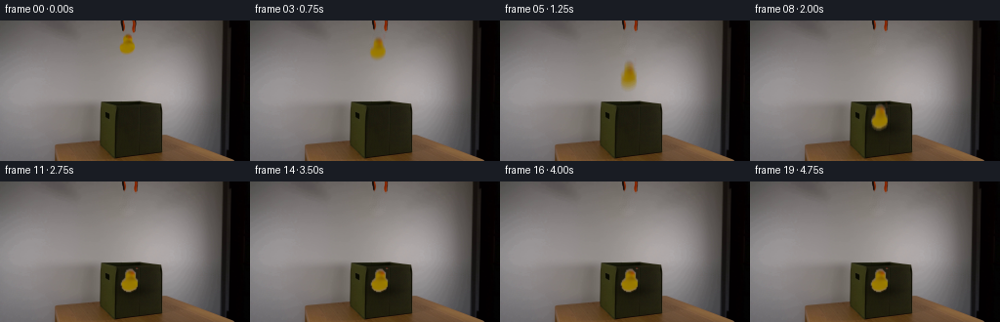
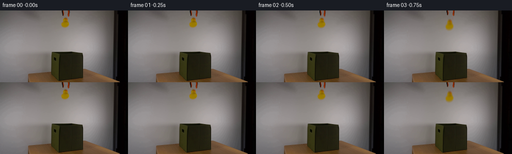
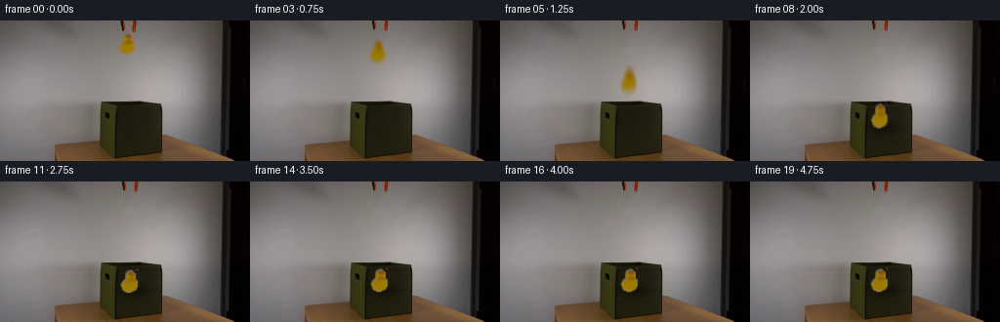
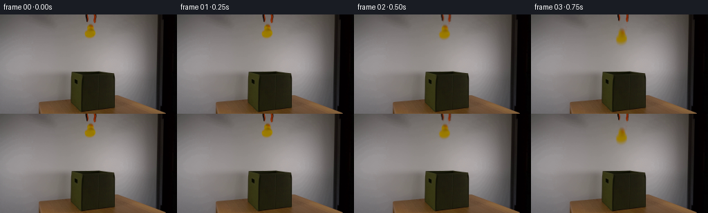

← 本轮 smoke 总览traex/DeepSeek-V4.1-Flash · 0058
text · 256×144 · 4.0 FPS · 20 帧 · 状态 complete · 输出 tokens 49155
原始任务Static locked-off single-shot with fixed frame throughout filmed with constant framerate in real-time. The scene shows a realistic scientific demonstration. The scene only contains the described setup and actions. An orange-black grabber tool is suspended above the open dark green fabric box on a wooden table. The orange-black grabber tool releases the yellow rubber duck above the open dark green fabric box.
当前保存结果
已保存候选与代码修改
这里按时间展示外部捕获的候选，每份均可单独播放。保存新版本不等于完成视觉检查；下方工具证据记录实际看过的图。
候选 01 · 2026-11-09T02:07:16.758631+00:00 · 点开播放与检查图
inspection.png

transition_check.png

代码变化
--- 上一保存版本
+++ 本次保存版本
@@ -0,0 +1,311 @@
+from pathlib import Path
+import math
+
+import cv2
+import numpy as np
+from PIL import Image
+
+import artifact_io
+
+
+CASE_DIR = Path(__file__).resolve().parent
+WIDTH, HEIGHT = 256, 144
+FPS = 4
+FRAME_COUNT = 20
+
+
+def smoothstep(x):
+ x = np.clip(x, 0.0, 1.0)
+ return x * x * (3.0 - 2.0 * x)
+
+
+def feather_alpha(mask, low=0.0, high=1.0):
+ return np.clip((mask.astype(np.float32) - low) / (high - low), 0.0, 1.0)
+
+
+def build_clean_plate(source):
+ """Remove the suspended duck and gripper with a locally smooth plate."""
+ rgb = source.astype(np.float32)
+ r, g, b = rgb[..., 0], rgb[..., 1], rgb[..., 2]
+ chroma = rgb.max(axis=2) - rgb.min(axis=2)
+ luminance = rgb.mean(axis=2)
+
+ duck_roi = np.zeros((HEIGHT, WIDTH), dtype=np.uint8)
+ duck_roi[12:38, 118:143] = 1
+ duck = duck_roi.astype(bool) & (
+ (chroma > 13.0) & (r > g * 1.02) & (b < 105.0)
+ )
+
+ gripper_roi = np.zeros((HEIGHT, WIDTH), dtype=np.uint8)
+ gripper_roi[0:13, 122:142] = 1
+ gripper = gripper_roi.astype(bool) & (
+ ((chroma > 18.0) & (r > g * 1.08))
+ | (luminance < 66.0)
+ )
+
+ object_mask = (duck | gripper).astype(np.uint8)
+ object_mask = cv2.dilate(
+ object_mask, cv2.getStructuringElement(cv2.MORPH_ELLIPSE, (3, 3))
+ )
+
+ # A narrow inpainting radius preserves the broad wall gradient.
+ clean = cv2.inpaint(
+ source,
+ object_mask,
+ 5,
+ cv2.INPAINT_TELEA,
+ ).astype(np.float32)
+
+ # Return the source's subtle sensor grain to otherwise smooth inpainted areas.
+ residual_roi = source[8:43, 105:156].astype(np.float32)
+ residual = residual_roi - cv2.GaussianBlur(
+ residual_roi.astype(np.uint8), (0, 0), 2.2
+ ).astype(np.float32)
+ rng = np.random.default_rng(58)
+ grain = rng.normal(0.0, 0.75, size=(HEIGHT, WIDTH, 1)).astype(np.float32)
+ grain *= object_mask[..., None].astype(np.float32)
+ clean = np.clip(clean + grain, 0, 255)
+ return np.round(clean).astype(np.uint8), object_mask, duck, gripper
+
+
+def make_rgba(source, clean, mask, bounds):
+ """Unpremultiply the source over its reconstructed background."""
+ x0, y0, x1, y1 = bounds
+ src = source[y0:y1, x0:x1].astype(np.float32)
+ bg = clean[y0:y1, x0:x1].astype(np.float32)
+ m = mask[y0:y1, x0:x1].astype(np.float32)
+
+ # The source is only 256 px wide; a soft two-pixel shoulder avoids cutout edges.
+ m = cv2.GaussianBlur(m, (0, 0), 0.55)
+ m = np.clip((m - 0.08) / 0.88, 0.0, 1.0)
+ fg = np.empty_like(src)
+ safe = np.maximum(m[..., None], 0.08)
+ fg = np.clip(bg + (src - bg) / safe, 0, 255)
+ rgba = np.dstack((fg, m * 255.0)).astype(np.uint8)
+ return rgba
+
+
+def split_alpha(rgba, left):
+ out = rgba.copy()
+ if left:
+ out[:, out.shape[1] // 2 :, 3] = 0
+ else:
+ out[:, : out.shape[1] // 2, 3] = 0
+ return out
+
+
+def transform_rgba(rgba, center, angle, sx, sy):
+ """Rotate and scale a small RGBA sprite into a padded output patch."""
+ h, w = rgba.shape[:2]
+ pad = 38
+ out_size = int(max(w, h) + pad * 2)
+ patch_center = out_size * 0.5
+
+ theta = math.radians(angle)
+ ca, sa = math.cos(theta), math.sin(theta)
+ a = np.array(
+ [
+ [sx * ca, -sy * sa],
+ [sx * sa, sy * ca],
+ ],
+ dtype=np.float32,
+ )
+ src_center = np.array([(w - 1) * 0.5, (h - 1) * 0.5], dtype=np.float32)
+ matrix = np.zeros((2, 3), dtype=np.float32)
+ matrix[:, :2] = a
+ matrix[:, 2] = np.array([patch_center, patch_center]) - a @ src_center
+
+ rgba_patch = cv2.warpAffine(
+ rgba,
+ matrix,
+ (out_size, out_size),
+ flags=cv2.INTER_LINEAR,
+ borderMode=cv2.BORDER_CONSTANT,
+ borderValue=(0, 0, 0, 0),
+ )
+ x = int(round(center[0] - patch_center))
+ y = int(round(center[1] - patch_center))
+ return rgba_patch, x, y
+
+
+def add_shadow(frame, center, strength):
+ if strength <= 0.002:
+ return
+ yy, xx = np.mgrid[0:HEIGHT, 0:WIDTH]
+ sx = 12.5
+ sy = 4.5
+ shadow_y = min(center[1] + 11.0, 111.0)
+ shadow_x = center[0] + 4.5
+ blob = np.exp(
+ -0.5
+ * (((xx - shadow_x) / sx) ** 2 + ((yy - shadow_y) / sy) ** 2)
+ )
+ interior = (
+ (xx > 114)
+ & (xx < 167)
+ & (yy > 84)
+ & (yy < 127)
+ )
+ amount = (0.38 * strength * blob * interior)[..., None]
+ frame[:] = np.clip(frame.astype(np.float32) * (1.0 - amount), 0, 255).astype(
+ np.uint8
+ )
+
+
+def composite(frame, rgba, center, angle=0.0, sx=1.0, sy=1.0):
+ patch, x, y = transform_rgba(rgba, center, angle, sx, sy)
+ ph, pw = patch.shape[:2]
+ x0, y0 = max(x, 0), max(y, 0)
+ x1, y1 = min(x + pw, WIDTH), min(y + ph, HEIGHT)
+ if x1 <= x0 or y1 <= y0:
+ return frame
+ px0, py0 = x0 - x, y0 - y
+ px1, py1 = px0 + (x1 - x0), py0 + (y1 - y0)
+ src = patch[py0:py1, px0:px1].astype(np.float32)
+ alpha = src[..., 3:4] / 255.0
+ dst = frame[y0:y1, x0:x1].astype(np.float32)
+ blended = src[..., :3] * alpha + dst * (1.0 - alpha)
+ frame[y0:y1, x0:x1] = np.clip(blended, 0, 255).astype(np.uint8)
+ return frame
+
+
+def motion_state(t):
+ """Return duck center, angle, scale, jaw opening, shadow, and impact pulse."""
+ release_t = 0.50
+ fall_end = 1.76
+ start = np.array([130.2, 24.3], dtype=np.float32)
+ landing = np.array([132.1, 101.7], dtype=np.float32)
+ scale_x = 1.0
+ scale_y = 1.0
+
+ if t <= release_t:
+ center = start.copy()
+ angle = 0.0
+ scale = 1.0
+ shadow = 0.0
+ pulse = 0.0
+ elif t < fall_end:
+ u = (t - release_t) / (fall_end - release_t)
+ drop = smoothstep(u) * 0.20 + (u * u) * 0.80
+ center = start + (landing - start) * drop
+ center[0] += 0.65 * math.sin(math.pi * u) - 0.15 * u
+ angle = -2.2 * math.sin(math.pi * u) + 1.1 * u
+ scale = 1.0 + 0.075 * u
+ scale_x, scale_y = scale, scale
+ shadow = float(smoothstep((center[1] - 58.0) / 40.0))
+ pulse = 0.0
+ else:
+ tau = t - fall_end
+ center = landing.copy()
+ angle = 1.1
+ scale = 1.075
+ if tau < 0.18:
+ k = tau / 0.18
+ squash = math.sin(math.pi * k) ** 2
+ scale_x = scale * (1.0 + 0.18 * squash)
+ scale_y = scale * (1.0 - 0.20 * squash)
+ center[1] += 1.7 * squash
+ angle += 2.8 * squash
+ pulse = squash
+ elif tau < 0.48:
+ k = (tau - 0.18) / 0.30
+ center[1] -= 5.0 * math.sin(math.pi * k) * (1.0 - 0.35 * k)
+ angle -= 2.2 * math.sin(math.pi * k)
+ scale_x = scale * (1.0 - 0.05 * math.sin(math.pi * k))
+ scale_y = scale * (1.0 + 0.06 * math.sin(math.pi * k))
+ pulse = 0.0
+ else:
+ k = min((tau - 0.48) / 0.52, 1.0)
+ settle = math.exp(-3.8 * k) * math.sin(2.0 * math.pi * k)
+ center[1] += 1.0 * settle
+ angle += 1.0 * settle
+ scale_x = scale * (1.0 + 0.025 * settle)
+ scale_y = scale * (1.0 - 0.025 * settle)
+ pulse = 0.0
+ shadow = 1.0
+
+ jaw = smoothstep((t - release_t) / 0.22) if t >= release_t else 0.0
+ return center, angle, scale_x, scale_y, jaw, shadow, pulse
+
+
+def render_frame(plate, duck_rgba, jaw_left, jaw_right, t, motion_blur=True):
+ if not motion_blur:
+ sub_times = [t]
+ else:
+ shutter = 0.065
+ sub_times = np.linspace(t - shutter, t + shutter, 5)
+ accum = np.zeros((HEIGHT, WIDTH, 3), dtype=np.float32)
+
+ for st in sub_times:
+ frame = plate.copy()
+ center, angle, sx, sy, jaw, shadow, pulse = motion_state(float(st))
+ add_shadow(frame, center, shadow)
+ if pulse > 0.01:
+ # A restrained local light change reads as fabric compression at impact.
+ yy, xx = np.mgrid[0:HEIGHT, 0:WIDTH]
+ ring = np.exp(
+ -0.5
+ * (((xx - center[0]) / 14.0) ** 2 + ((yy - 112.0) / 3.0) ** 2)
+ )
+ mask = (xx > 115) & (xx < 167) & (yy > 101) & (yy < 122)
+ frame = np.clip(
+ frame.astype(np.float32)
+ + (ring * mask * pulse * 4.0)[..., None],
+ 0,
+ 255,
+ ).astype(np.uint8)
+
+ # The jaws hinge outward and lift a pixel during the release.
+ lift = 0.9 * jaw
+ composite(
+ frame,
+ jaw_left,
+ (129.0 - 1.8 * jaw, 5.7 - lift),
+ angle=0.0,
+ sx=1.0,
+ sy=1.0,
+ )
+ composite(
+ frame,
+ jaw_right,
+ (136.9 + 1.8 * jaw, 5.7 - lift),
+ angle=0.0,
+ sx=1.0,
+ sy=1.0,
+ )
+ composite(frame, duck_rgba, center, angle, sx, sy)
+ accum += frame.astype(np.float32)
+
+ return np.clip(np.round(accum / len(sub_times)), 0, 255).astype(np.uint8)
+
+
+def main():
+ source = np.asarray(Image.open(CASE_DIR / "first_frame.png").convert("RGB"))
+ plate, object_mask, duck_mask, gripper_mask = build_clean_plate(source)
+
+ duck_rgba = make_rgba(source, plate, duck_mask, (117, 10, 144, 39))
+
+ left_mask = gripper_mask.copy()
+ left_mask[:, 132:] = False
+ right_mask = gripper_mask.copy()
+ right_mask[:, :132] = False
+ jaw_left = make_rgba(source, plate, left_mask, (121, 0, 132, 14))
+ jaw_right = make_rgba(source, plate, right_mask, (132, 0, 143, 14))
+
+ frames = []
+ for index in range(FRAME_COUNT):
+ if index <= 1:
+ # Keep the exact source while the gripper is still holding the duck.
+ frames.append(source.copy())
+ continue
+ t = index / FPS
+ frames.append(render_frame(plate, duck_rgba, jaw_left, jaw_right, t))
+
+ frames = np.stack(frames, axis=0).astype(np.uint8)
+ assert frames.shape == (FRAME_COUNT, HEIGHT, WIDTH, 3)
+ assert np.array_equal(frames[0], source)
+ artifact_io.save(frames, CASE_DIR)
+
+
+if __name__ == "__main__":
+ main()
候选 02 · 2026-11-09T02:13:22.003122+00:00 · 点开播放与检查图
inspection.png

transition_check.png

代码变化
--- 上一保存版本
+++ 本次保存版本
@@ -171,8 +171,8 @@
def motion_state(t):
"""Return duck center, angle, scale, jaw opening, shadow, and impact pulse."""
- release_t = 0.50
- fall_end = 1.76
+ release_t = 0.38
+ fall_end = 1.72
start = np.array([130.2, 24.3], dtype=np.float32)
landing = np.array([132.1, 101.7], dtype=np.float32)
scale_x = 1.0
@@ -207,20 +207,20 @@
center[1] += 1.7 * squash
angle += 2.8 * squash
pulse = squash
- elif tau < 0.48:
- k = (tau - 0.18) / 0.30
+ elif tau < 0.46:
+ k = (tau - 0.18) / 0.28
center[1] -= 5.0 * math.sin(math.pi * k) * (1.0 - 0.35 * k)
angle -= 2.2 * math.sin(math.pi * k)
scale_x = scale * (1.0 - 0.05 * math.sin(math.pi * k))
scale_y = scale * (1.0 + 0.06 * math.sin(math.pi * k))
pulse = 0.0
else:
- k = min((tau - 0.48) / 0.52, 1.0)
- settle = math.exp(-3.8 * k) * math.sin(2.0 * math.pi * k)
- center[1] += 1.0 * settle
- angle += 1.0 * settle
- scale_x = scale * (1.0 + 0.025 * settle)
- scale_y = scale * (1.0 - 0.025 * settle)
+ k = min((tau - 0.46) / 3.20, 1.0)
+ settle = math.exp(-1.8 * k) * math.sin(2.4 * math.pi * k)
+ center[1] += 0.75 * settle
+ angle += 0.9 * settle
+ scale_x = scale * (1.0 + 0.018 * settle)
+ scale_y = scale * (1.0 - 0.018 * settle)
pulse = 0.0
shadow = 1.0
可观测工具行为
命令 1 · 2026-11-09T02:01:14.746847+00:00/bin/bash -c "pwd && rg --files -g '"'!*.pyc'"' -g '"'!__pycache__'"'"
exit 0 命令 2 · 2026-11-09T02:01:14.876294+00:00/bin/bash -c "sed -n '1,240p' prompt.txt"
exit 0 命令 3 · 2026-11-09T02:01:15.236854+00:00/bin/bash -c "sed -n '1,260p' GENERATION_RULES.md"
exit 0 命令 4 · 2026-11-09T02:01:15.447417+00:00/bin/bash -c 'ls -la && file first_frame.png && identify first_frame.png 2>/dev/null || true'
exit 0 命令 5 · 2026-11-09T02:01:24.176758+00:00/bin/bash -c "python - <<'PY'
from PIL import Image
import numpy as np
im=Image.open('first_frame.png').convert('RGB')
a=np.asarray(im)
print('size',im.size,'shape',a.shape,'dtype',a.dtype)
print('unique',len(np.unique(a.reshape(-1,3),axis=0)))
print('mean',a.mean((0,1)),'min',a.min((0,1)),'max',a.max((0,1)))
# dominant quantized colors
q=(a//16)*16
u,c=np.unique(q.reshape(-1,3),axis=0,return_counts=True)
for i in np.argsort(c)[-25:][::-1]: print(tuple(u[i]),c[i])
PY"exit 0 命令 6 · 2026-11-09T02:01:34.643132+00:00/bin/bash -c "python - <<'PY'
from PIL import Image
import numpy as np
from scipy import ndimage
a=np.asarray(Image.open('first_frame.png').convert('RGB')).astype(int)
R,G,B=a[...,0],a[...,1],a[...,2]
tests={
'yellow':(R>110)&(G>70)&(B<90)&(R>G*1.15)&(G>B*1.3),
'orange':(R>110)&(G>35)&(G<130)&(B<80)&(R>G*1.25)&(G>B*1.25),
'green':(G>R*1.1)&(G>B*1.15)&(G>25),
'darkgreen':(G>R*1.05)&(G>B*1.08)&(G<110)&(G>20),
'bright':(R>145)&(G>140)&(B>130),
'black':(R<35)&(G<35)&(B<35),
}
for name,m in tests.items():
ys,xs=np.where(m)
print(name,len(xs),'bbox', (xs.min(),ys.min(),xs.max(),ys.max()) if len(xs) else None,'mean',a[m].mean(0) if len(xs) else None)
lab,n=ndimage.label(m)
comps=[]
for i in range(1,n+1):
yy,xx=np.where(lab==i)
if len(xx)>=5: comps.append((len(xx),xx.min(),yy.min(),xx.max(),yy.max(),a[lab==i].mean(0)))
for c in sorted(comps,reverse=True)[:12]: print(' ',c)
PY"exit 0 命令 7 · 2026-11-09T02:01:39.606401+00:00/bin/bash -c "sed -n '1,260p' artifact_io.py"
exit 0 命令 8 · 2026-11-09T02:01:51.194424+00:00/bin/bash -c "python - <<'PY'
from PIL import Image
import numpy as np, colorsys
a=np.asarray(Image.open('first_frame.png').convert('RGB'))
# 4x4 semantic map. char from average then categories
for y in range(0,144,4):
s=''
for x in range(0,256,4):
p=a[y:y+4,x:x+4].reshape(-1,3).mean(0); r,g,b=p
mx,mn=max(p),min(p); sat=(mx-mn)/(mx+1e-6)
if r>90 and g>60 and b<75 and r>g*1.12 and g>b*1.25: c='Y' # yellow/orange
elif g>r*1.03 and g>b*1.08 and g>18: c='G'
elif mx<22: c='@'
elif mx<45: c='#'
elif mx<75: c='8'
elif mx<105: c='o'
elif mx<135: c=':'
elif mx<160: c='.'
else: c=' '
s+=c
print(f'{y:03d} '+s)
PY"exit 0 命令 9 · 2026-11-09T02:01:55.722014+00:00/bin/bash -c "python - <<'PY'
from PIL import Image
im=Image.open('first_frame.png')
im.resize((1024,576),Image.Resampling.NEAREST).save('.tmp/first_nearest.png')
im.resize((1024,576),Image.Resampling.LANCZOS).save('.tmp/first_smooth.png')
PY"exit 0 命令 10 · 2026-11-09T02:02:02.581912+00:00/bin/bash -c "python - <<'PY'
from PIL import Image
import numpy as np
a=np.asarray(Image.open('first_frame.png').convert('RGB'))
# print precise runs by color classes on selected rows
for y in [8,14,20,28,34,40,48,60,80,84,88,96,104,112,120,124,128,132,136,140,143]:
row=a[y]
# coarse sample every 4 px as rgb hex compact
vals=[]
for x in range(0,256,4):
p=row[x:x+4].mean(0).astype(int); vals.append(f'{p[0]:02x}{p[1]:02x}{p[2]:02x}')
print(y,' '.join(vals))
PY"exit 0 命令 11 · 2026-11-09T02:02:10.226642+00:00/bin/bash -c "python - <<'PY'
from PIL import Image
import numpy as np
from scipy import ndimage
a=np.asarray(Image.open('first_frame.png').convert('RGB')).astype(float)
# candidate yellow duck at top: x115..145 y0..38; get row/col occupancy in HSV-like
r,g,b=a[...,0],a[...,1],a[...,2]
y=(r>100)&(g>65)&(b<80)&(r>g*1.1)&(g>b*1.25)
print('top yellow per row')
for yy in range(0,50):
xs=np.where(y[yy,100:160])[0]+100
if len(xs): print(yy, xs.min(),xs.max(),len(xs),np.median(xs))
# exact pixel colors at points
pts=[(128,8),(128,12),(128,16),(128,20),(128,24),(128,28),(128,32),(130,36),(120,20),(136,20),(125,8),(140,15),(140,30),(120,30)]
for x,yy in pts: print((x,yy),tuple(a[yy,x].astype(int)))
# changes candidates: green box region x104..168 y82..143
print('green region samples')
for yy in range(82,144,6):
print(yy,[tuple(a[yy,x].astype(int)) for x in [105,110,115,120,125,130,135,140,145,150,155,160,165]])
PY"exit 0 命令 12 · 2026-11-09T02:02:22.285492+00:00/bin/bash -c "python - <<'PY'
from PIL import Image
import numpy as np
a=np.asarray(Image.open('first_frame.png').convert('RGB')).astype(int)
# crop x100:160 y0:60; pixel category every pixel, 2 px cols aggregated by priority
for y in range(0,64):
s=''
for x in range(96,160,2):
p=a[y:y+1,x:x+2].reshape(-1,3).mean(0); r,g,b=p
if r<35 and g<35 and b<35: c='@'
elif r>100 and g>65 and b<80 and r>g*1.1 and g>b*1.25: c='Y'
elif r>105 and g<95 and b<65 and r>g*1.25: c='O'
elif r<80 and g<80 and b<80: c='#'
elif max(p)<110: c='8'
elif max(p)<140: c='o'
elif max(p)<160: c='.'
else: c=' '
s+=c
print(f'{y:02d} {s}')
PY"exit 0 命令 13 · 2026-11-09T02:02:29.068554+00:00/bin/bash -c "python - <<'PY'
from PIL import Image
import numpy as np
a=np.asarray(Image.open('first_frame.png').convert('RGB'))
# mask coordinates where colors significantly saturated around duck, x118:143 y12:36
for y in range(10,38):
vals=[]
for x in range(118,144):
r,g,b=map(int,a[y,x]);
if (r>100 and g>65 and b<85 and r>g*1.08 and g>b*1.15): vals.append((x,(r,g,b)))
print(y,vals)
PY"exit 0 命令 14 · 2026-11-09T02:02:37.126648+00:00/bin/bash -c "python - <<'PY'
from PIL import Image
import numpy as np
from scipy import ndimage
a=np.asarray(Image.open('first_frame.png').convert('RGB')).astype(float)
r,g,b=a[...,0],a[...,1],a[...,2]
# duck region broad, connected component
m=(r>100)&(g>60)&(b<90)&(r>g*1.08)&(g>b*1.15)
m[:12]=False;m[37:]=False;m[:,:115]=False;m[:,145:]=False
lab,n=ndimage.label(m)
for i in range(1,n+1):
yy,xx=np.where(lab==i)
if len(xx)>10:
print(len(xx),xx.min(),yy.min(),xx.max(),yy.max())
print('centroid',xx.mean(),yy.mean())
# look around box for visible fabric and opening: local color and lines
PY"exit 0 命令 15 · 2026-11-09T02:02:45.945772+00:00/bin/bash -c "python - <<'PY'
from PIL import Image
import numpy as np
from scipy import ndimage
a=np.asarray(Image.open('first_frame.png').convert('RGB')).astype(float)
r,g,b=a[...,0],a[...,1],a[...,2]
# candidate fabric greens in lower area
for expr,name in [((g>r*1.02)&(g>b*1.05)&(g>25),'g1'),((g>r)&(g>b)&(g>30)&(r<100),'g2'),((g>r*1.05)&(g>b*1.1)&(g>20)&(g<120),'g3')]:
m=expr
print(name,m.sum(),a[m].mean(0))
lab,n=ndimage.label(m)
for i in range(1,n+1):
yy,xx=np.where(lab==i)
if len(xx)>20: print(len(xx),(xx.min(),yy.min(),xx.max(),yy.max()),a[lab==i].mean(0))
# boxes of likely orange-black grabber: saturated orange red
m=(r>90)&(r>g*1.3)&(g<100)&(b<80)
print('orange',m.sum())
lab,n=ndimage.label(m)
for i in range(1,n+1):
yy,xx=np.where(lab==i)
if len(xx)>10: print(len(xx),(xx.min(),yy.min(),xx.max(),yy.max()),a[lab==i].mean(0))
PY"exit 0 命令 16 · 2026-11-09T02:02:50.174402+00:00/bin/bash -c "python - <<'PY'
from PIL import Image
import numpy as np
a=np.asarray(Image.open('first_frame.png').convert('RGB')).astype(float)
# Find strong vertical/horizontal structures: print variance across rows/cols
for x in range(100,180,5):
print(x, a[80:140,x].mean(0).astype(int), a[80:140,x].std(0).astype(int))
PY"exit 0 命令 17 · 2026-11-09T02:03:02.434004+00:00/bin/bash -c "python - <<'PY'
mods=['cv2','scipy','skimage','numpy','PIL']
for m in mods:
try:
x=__import__(m); print(m,'ok',getattr(x,'__version__',''))
except Exception as e: print(m,'no',e)
PY"
exit 0 命令 18 · 2026-11-09T02:03:10.205987+00:00/bin/bash -c "python - <<'PY'
from PIL import Image
import numpy as np
a=np.asarray(Image.open('first_frame.png').convert('RGB')).astype(int)
# local image around duck and box using ANSI truecolor block samples perhaps output escapes? make ascii based on dominant hue and brightness finer
def char(p):
r,g,b=p; mx=max(p); mn=min(p)
if r>90 and r>g*1.35 and g>b*1.4: return 'R'
if r>90 and g>60 and b<90 and r>g*1.08 and g>b*1.2: return 'Y'
if g>r*1.02 and g>b*1.05 and g>18: return 'G'
if mx<25:return '@'
if mx<45:return '#'
if mx<65:return '8'
if mx<85:return 'o'
if mx<105:return ':'
if mx<125:return '.'
if mx<145:return ' '
return ' '
# crop x110-170 y75-143, scale x 1, y 1
for y in range(75,144):
s=''
for x in range(100,180):
p=a[y,x]
s+=char(p)
print(f'{y:03d} {s}')
PY"exit 0 命令 19 · 2026-11-09T02:03:18.630490+00:00/bin/bash -c "python - <<'PY'
from PIL import Image
import numpy as np
from scipy import ndimage
a=np.asarray(Image.open('first_frame.png').convert('RGB')).astype(float)
# all pixels with hue orange etc in top region, save masks maybe inspect by row exact
r,g,b=a[...,0],a[...,1],a[...,2]
# print full RGB for x120-142 y12-37 in hex grid, focus edge detection
for y in range(11,38):
print(f'{y:02d}', ' '.join(f'{int(r[y,x]):02x}{int(g[y,x]):02x}{int(b[y,x]):02x}' for x in range(119,141)))
PY"exit 0 命令 20 · 2026-11-09T02:03:25.631879+00:00/bin/bash -c "python - <<'PY'
from PIL import Image
import numpy as np
from scipy import ndimage
a=np.asarray(Image.open('first_frame.png').convert('RGB')).astype(float)
# Detect near-duplicate neutral background columns around duck: show means and pixels
for y in range(10,37):
print(y, ' '.join(f'{a[y,x].mean():.0f}' for x in range(115,145)))
PY"exit 0 命令 21 · 2026-11-09T02:03:32.688235+00:00/bin/bash -c "python - <<'PY'
from PIL import Image
import numpy as np
a=np.asarray(Image.open('first_frame.png').convert('RGB')).astype(float)
# Source coordinate guesses: wall/table boundary etc. compute row median/means
for y in range(0,144,4):
print(y, a[y].mean(0).astype(int), np.median(a[y],axis=0).astype(int), a[y,:].min(0),a[y,:].max(0))
PY"exit 0 命令 22 · 2026-11-09T02:03:40.690628+00:00/bin/bash -c "python - <<'PY'
from PIL import Image
import numpy as np
a=np.asarray(Image.open('first_frame.png').convert('RGB')).astype(int)
# crop x100-160 y0-45 print detailed edge chars using colorfulness magnitude
for y in range(0,45):
s=''
for x in range(110,150):
r,g,b=a[y,x]
sat=max(r,g,b)-min(r,g,b)
if sat>45 and r>g*1.15: c='X'
elif sat>30 and r>g*1.08: c='x'
elif max(r,g,b)<35: c='@'
elif max(r,g,b)<70: c='#'
elif max(r,g,b)<100: c='8'
elif max(r,g,b)<125: c='o'
elif max(r,g,b)<145: c='.'
else: c=' '
s+=c
print(f'{y:02d} {s}')
PY"exit 0 命令 23 · 2026-11-09T02:03:48.529774+00:00/bin/bash -c "python - <<'PY'
from PIL import Image
import numpy as np
from scipy import ndimage
a=np.asarray(Image.open('first_frame.png').convert('RGB')).astype(int)
r,g,b=a[...,0],a[...,1],a[...,2]
# Grabber likely black/orange above duck. show color grid y0:16 x112:150 categories
for y in range(0,15):
s=''
for x in range(110,152):
p=a[y,x]; r0,g0,b0=p
if r0<35 and g0<35 and b0<35: c='@'
elif r0>100 and g0<75 and r0>g0*1.5: c='O'
elif r0>110 and g0<100 and r0>g0*1.25: c='o'
elif max(p)<80:c='#'
elif max(p)<110:c='8'
elif max(p)<135:c='.'
else:c=' '
s+=c
print(f'{y:02d} {s}')
PY"exit 0 命令 24 · 2026-11-09T02:03:56.864391+00:00/bin/bash -c "python - <<'PY'
from PIL import Image
import numpy as np
a=np.asarray(Image.open('first_frame.png').convert('RGB')).astype(float)
# gradient stats for duck vs background; inspect x124-139 y16-32 channels
print('r')
for y in range(13,36): print(y,' '.join(f'{int(a[y,x,0]):3d}' for x in range(121,140)))
print('g')
for y in range(13,36): print(y,' '.join(f'{int(a[y,x,1]):3d}' for x in range(121,140)))
print('b')
for y in range(13,36): print(y,' '.join(f'{int(a[y,x,2]):3d}' for x in range(121,140)))
PY"exit 0 命令 25 · 2026-11-09T02:04:05.843104+00:00/bin/bash -c "python - <<'PY'
from PIL import Image
import numpy as np
from scipy import ndimage
a=np.asarray(Image.open('first_frame.png').convert('RGB')).astype(float)
# inspect source as regions with texture orientation via grayscale blur and derivatives
im=Image.open('first_frame.png').convert('L')
# resize and save contrast/structure for ourselves via numeric stats only
for y in range(75,145,2):
row=[]
for x in range(95,180,3):
p=np.asarray(im)[y:y+2,x:x+3].mean()
row.append(f'{p:3.0f}')
print(y,' '.join(row))
PY"exit 0 命令 26 · 2026-11-09T02:04:14.897339+00:00/bin/bash -c "python - <<'PY'
from PIL import Image
import numpy as np
a=np.asarray(Image.open('first_frame.png').convert('RGB')).astype(int)
# print x runs of saturation at each y 0..45, using r-g and b dark
for y in range(0,45):
vals=[]
for x in range(100,160):
r,g,b=a[y,x]; s=max(r,g,b)-min(r,g,b)
if s>35 and r>=g: vals.append(x)
# group
groups=[]
for x in vals:
if not groups or x>groups[-1][-1]+1:groups.append([x])
else:groups[-1].append(x)
print(y,[(g[0],g[-1]) for g in groups])
PY"exit 0 命令 27 · 2026-11-09T02:04:23.083274+00:00/bin/bash -c "python - <<'PY'
from PIL import Image
import numpy as np
a=np.asarray(Image.open('first_frame.png').convert('RGB')).astype(float)
# Get boundaries of box via row derivative around x100-175 and y80-143
L=a.mean(2)
for y in [80,81,82,83,84,85,86,87,88,90,95,100,110,120,130,140,143]:
d=np.abs(np.diff(L[y]))
ids=np.argsort(d)[-12:]
print(y, sorted([(int(x),round(float(d[x]),1)) for x in ids]))
PY"exit 0 命令 28 · 2026-11-09T02:04:29.620669+00:00/bin/bash -c "python - <<'PY'
from PIL import Image
import numpy as np
a=np.asarray(Image.open('first_frame.png').convert('RGB')).astype(float)
# Print representative pixels from duck with b < 10 and background around. exact coordinate map rows y14..34 x120..140
for y in range(13,36):
s=''
for x in range(120,141):
r,g,b=a[y,x]
if b<20 and r>100: c='Y'
elif b<50 and r>90: c='y'
elif r>g+10 and g>b+20:c='x'
elif max(r,g,b)<50:c='@'
elif max(r,g,b)<80:c='#'
elif max(r,g,b)<110:c='8'
elif max(r,g,b)<130:c='o'
elif max(r,g,b)<145:c='.'
else:c=' '
s+=c
print(f'{y:02d} {s}')
PY"exit 0 命令 29 · 2026-11-09T02:04:36.086673+00:00/bin/bash -c "python - <<'PY'
from PIL import Image
import numpy as np
a=np.asarray(Image.open('first_frame.png').convert('RGB')).astype(float)
# inspect exact R,G,B at x122-140 y14-34, output only luminance + saturation matrices
for y in range(13,35):
print(f'{y:02d} sat', ' '.join(f'{int(max(a[y,x])-min(a[y,x])):2d}' for x in range(120,142)))
PY"exit 0 命令 30 · 2026-11-09T02:04:44.885582+00:00/bin/bash -c "python - <<'PY'
from PIL import Image
import numpy as np
a=np.asarray(Image.open('first_frame.png').convert('RGB')).astype(float)
# Estimate local row/col background near duck from left and right strips
# Compare a pixel's neutral background to extrapolation from x110 and x145 to understand radial vignette
for y in [14,20,26,32,40]:
print('y',y)
for x in range(115,146,2):
print(x,tuple(a[y,x].astype(int)),end='; ')
print()
PY"exit 0 命令 31 · 2026-11-09T02:04:53.466531+00:00/bin/bash -c "python - <<'PY'
from PIL import Image
import numpy as np
a=np.asarray(Image.open('first_frame.png').convert('RGB')).astype(int)
# candidate mask from saturation, extract alpha based on color distance from estimated neutral background
# inspect edges via hue saturation; print grayscale hue-ish for y10:40 x118:145 with saturation levels
for y in range(10,40):
s=''
for x in range(116,146):
p=a[y,x]; sat=max(p)-min(p)
if sat<15:c='.'
elif sat<35:c=':'
elif sat<65:c='o'
elif sat<105:c='O'
else:c='Y'
s+=c
print(f'{y:02d} {s}')
PY"exit 0 命令 32 · 2026-11-09T02:05:03.083225+00:00/bin/bash -c "python - <<'PY'
from PIL import Image
import numpy as np
a=np.asarray(Image.open('first_frame.png').convert('RGB')).astype(float)
# For box, classify color saturation and likely fabric vs interior
for y in range(80,144,4):
s=''
for x in range(96,180,2):
p=a[y:y+4,x:x+2].reshape(-1,3).mean(0); r,g,b=p
if max(p)-min(p)>40 and r>g*1.2: c='R'
elif g>r*1.08 and g>b*1.12 and g>25: c='G'
elif max(p)<50:c='@'
elif max(p)<80:c='#'
elif max(p)<110:c='8'
elif max(p)<135:c='o'
elif max(p)<155:c='.'
else:c=' '
s+=c
print(f'{y:03d} {s}')
PY"exit 0 命令 33 · 2026-11-09T02:05:10.296391+00:00/bin/bash -c "python - <<'PY'
from PIL import Image
import numpy as np
a=np.asarray(Image.open('first_frame.png').convert('RGB')).astype(int)
# duck mask from sat plus coordinates. create source analysis mask and determine alpha by sat thresholds
# Print exact x range and saturation maxima for each row
for y in range(10,37):
xs=[]; vals=[]
for x in range(115,145):
s=int(max(a[y,x])-min(a[y,x]));
if s>15:xs.append(x);vals.append(s)
if xs: print(y,min(xs),max(xs),max(vals))
PY"exit 0 命令 34 · 2026-11-09T02:05:19.186019+00:00/bin/bash -c "python - <<'PY'
from PIL import Image
import numpy as np
a=np.asarray(Image.open('first_frame.png').convert('RGB')).astype(float)
# Build source mask by chroma excess r-b and likely duck. Determine color centroid trajectory possible.
# Look at lines extending from duck upward to edge
for x in [123,124,125,126,127,134,135,136,137,138]:
print('x',x,'top sat',[(y,int(max(a[y,x])-min(a[y,x]))) for y in range(0,16)])
PY"exit 0 命令 35 · 2026-11-09T02:06:54.491894+00:00/bin/bash -c 'python generate.py'
exit 1 命令 36 · 2026-11-09T02:07:15.410496+00:00/bin/bash -c 'python generate.py'
exit 0 命令 37 · 2026-11-09T02:07:28.365024+00:00/bin/bash -c "python - <<'PY'
from PIL import Image
import numpy as np
from pathlib import Path
s=np.asarray(Image.open('first_frame.png').convert('RGB'))
fs=sorted(Path('frames').glob('*.png'))
a=np.stack([np.asarray(Image.open(p).convert('RGB')) for p in fs])
print('frames',a.shape,'dtype',a.dtype,'first identical',np.array_equal(a[0],s))
for i,f in enumerate(a):
d=np.abs(f.astype(int)-s.astype(int))
changed=np.any(d>0,axis=2)
ys,xs=np.where(changed)
print(i,'meanRGB',f.mean((0,1)).round(2),'changed',changed.sum(),'bbox',((xs.min(),ys.min(),xs.max(),ys.max()) if len(xs) else None),'mad',d.mean().round(3))
print('pixels.npz',Path('pixels.npz').stat().st_size,'index',Path('index.html').stat().st_size)
PY"exit 0 命令 38 · 2026-11-09T02:07:38.712657+00:00/bin/bash -c "python - <<'PY'
import generate as g
from PIL import Image
import numpy as np
s=np.asarray(Image.open('first_frame.png').convert('RGB'))
p,om,dm,gm=g.build_clean_plate(s)
d=g.make_rgba(s,p,dm,(117,10,144,39))
lm=gm.copy();lm[:,132:]=False
rm=gm.copy();rm[:,:132]=False
l=g.make_rgba(s,p,lm,(121,0,132,14));r=g.make_rgba(s,p,rm,(132,0,143,14))
print('masks',om.sum(),dm.sum(),gm.sum(),lm.sum(),rm.sum())
for n,x in [('duck',d),('left',l),('right',r)]:
a=x[...,3]
print(n,x.shape,'alpha',a.min(),a.max(),a.sum(),np.count_nonzero(a),'rgb',x[...,:3].mean((0,1)))
for i in range(20):
c,ang,sx,sy,j,sh,pu=g.motion_state(i/4)
print(i,round(i/4,2),'center',c.round(2),'ang',round(ang,2),'scale',round(float(sx),3),round(float(sy),3),'jaw',round(j,2),'shadow',round(sh,2),'pulse',round(pu,2))
PY"exit 0 命令 39 · 2026-11-09T02:07:42.705687+00:00/bin/bash -c "python - <<'PY'
from PIL import Image
import numpy as np
a=np.asarray(Image.open('inspection.png'))
print(a.shape)
PY"exit 0 命令 40 · 2026-11-09T02:07:52.585580+00:00/bin/bash -c "python - <<'PY'
from PIL import Image
import numpy as np
from pathlib import Path
# Create close-up numeric-difference audit images for frames 7-12 and source
for i in [0,2,3,4,5,6,7,8,9,10,12,19]:
im=Image.open(f'frames/{i:02d}.png')
im.resize((1024,576),Image.Resampling.NEAREST).save(f'.tmp/frame_{i:02d}_near.png')
# collision between frame 7 and 8
A=np.asarray(Image.open('frames/07.png')).astype(int);B=np.asarray(Image.open('frames/08.png')).astype(int)
print('7 vs 8 max',np.abs(A-B).max(),'mean',np.abs(A-B).mean(),'n',np.any(A"'!=B,axis=2).sum())
# colorfulness centroid per frame in expected box region / duck yellow
for i in range(20):
a=np.asarray(Image.open(f'"'frames/{i:02d}.png')).astype(int); r,g,b=a[...,0],a[...,1],a[...,2]
m=(r>105)&(g>75)&(b<60)&(r>g*1.08)
ys,xs=np.where(m)
print(i, 'yellow n',len(xs), 'centroid', (round(xs.mean(),1),round(ys.mean(),1)) if len(xs) else None, 'bbox',(xs.min(),ys.min(),xs.max(),ys.max()) if len(xs) else None)
PY"exit 0 命令 41 · 2026-11-09T02:07:56.897007+00:00/bin/bash -c "python - <<'PY'
from PIL import Image
import numpy as np
A=np.asarray(Image.open('frames/07.png'));B=np.asarray(Image.open('frames/08.png'))
d=np.abs(A.astype(int)-B.astype(int)).max(2)
ys,xs=np.where(d>3)
print('bbox',xs.min(),ys.min(),xs.max(),ys.max(),'n',len(xs))
# by row counts
for y in range(ys.min(),ys.max()+1):
n=(d[y]>3).sum()
if n: print(y,n,d[y].max())
PY"exit 0 命令 42 · 2026-11-09T02:08:07.213160+00:00/bin/bash -c "python - <<'PY'
import generate as g
from PIL import Image
import numpy as np
s=np.asarray(Image.open('first_frame.png').convert('RGB'));p,om,dm,gm=g.build_clean_plate(s)
d=g.make_rgba(s,p,dm,(117,10,144,39))
# alpha crop ascii
A=d[...,3]
for y in range(A.shape[0]):
print(f'{y:02d}', ''.join(' ' if x==0 else '.' if x<64 else 'o' if x<160 else '#' for x in A[y]))
# transformed patch size and alpha sum at scales
for c in [(130.2,24.3),(132.1,101.7)]:
P,x,y=g.transform_rgba(d,c,1.1,1.075,1.075);print(c,P.shape,x,y,'asum',P[...,3].sum(),'nonzero',np.count_nonzero(P[...,3]))
PY"exit 0 命令 43 · 2026-11-09T02:08:17.791028+00:00/bin/bash -c "python - <<'PY'
import generate as g
from PIL import Image
import numpy as np
s=np.asarray(Image.open('first_frame.png').convert('RGB'));p,om,dm,gm=g.build_clean_plate(s)
d=g.make_rgba(s,p,dm,(117,10,144,39))
lm=gm.copy();lm[:,132:]=False;rm=gm.copy();rm[:,:132]=False
l=g.make_rgba(s,p,lm,(121,0,132,14));r=g.make_rgba(s,p,rm,(132,0,143,14))
for i in range(20):
t=i/4
f=g.render_frame(p,d,l,r,t)
Image.fromarray(f).save(f'.tmp/render_{i:02d}.png')
# Compare 10..19
for i in range(10,20):
a=np.asarray(Image.open(f'.tmp/render_{i:02d}.png')).astype(int)
print(i,np.abs(a-np.asarray(Image.open('.tmp/render_10.png')).astype(int)).max())
PY"exit 0 命令 44 · 2026-11-09T02:08:39.432531+00:00/bin/bash -c "python - <<'PY'
from PIL import Image
import numpy as np
for i in [0,2,3,4,5,6,7,8,9,12,19]:
a=np.asarray(Image.open(f'frames/{i:02d}.png')).astype(int)
print('\\nFRAME',i)
for y in range(0,128,2):
s=''
for x in range(112,154,1):
p=a[y:y+2,x:x+1].reshape(-1,3).mean(0);r,g,b=p
if r>100 and g>65 and b<75 and r>g*1.08 and g>b*1.2:c='Y'
elif r>90 and g<80 and r>g*1.25:c='O'
elif max(p)<38:c='@'
elif max(p)<65:c='#'
elif max(p)<90:c='8'
elif max(p)<115:c='o'
elif max(p)<140:c='.'
else:c=' '
s+=c
print(f'{y:03d} {s}')
PY"exit 0 命令 45 · 2026-11-09T02:08:47.314257+00:00/bin/bash -c "python - <<'PY'
from PIL import Image
import numpy as np
from scipy import ndimage
for i in range(20):
a=np.asarray(Image.open(f'frames/{i:02d}.png')).astype(int)
# region around duck only, count saturated
r,g,b=a[...,0],a[...,1],a[...,2]
m=(r>95)&(g>55)&(b<85)&(r>g*1.05)&(g>b*1.1)
lab,n=ndimage.label(m)
comps=[]
for k in range(1,n+1):
ys,xs=np.where(lab==k)
if len(xs)>15: comps.append((len(xs),round(xs.mean(),1),round(ys.mean(),1),xs.min(),ys.min(),xs.max(),ys.max()))
print(i,sorted(comps,reverse=True)[:5])
PY"exit 0 命令 46 · 2026-11-09T02:08:55.330063+00:00/bin/bash -c "python - <<'PY'
from PIL import Image
import numpy as np
# Compare extracted duck appearance vs source numerically: source ROI, RGBA fg, clean
import generate as g
s=np.asarray(Image.open('first_frame.png').convert('RGB'));p,om,dm,gm=g.build_clean_plate(s);d=g.make_rgba(s,p,dm,(117,10,144,39))
# save sprite visualization, enlarged nearest with alpha checker on black
A=d[...,3]
out=np.zeros((*A.shape,3),np.uint8);out[:]=d[...,:3];out[A==0]=0
Image.fromarray(out).resize((27*12,29*12),Image.Resampling.NEAREST).save('.tmp/sprite_near.png')
# crop actual sprite view numeric means high alpha
m=A>200
print('high alpha rgb',d[...,:3][m].mean(0), 'bbox',np.where(m)[1].min(),np.where(m)[1].max(),np.where(m)[0].min(),np.where(m)[0].max())
# Compare frame 19 at placement vs source background clean
f=np.asarray(Image.open('frames/19.png')).astype(int);c=p.astype(int)
dff=f-c
ys,xs=np.where(np.abs(dff).max(2)>5)
print('frame19 diff bbox',xs.min(),ys.min(),xs.max(),ys.max())
PY"exit 0 命令 47 · 2026-11-09T02:09:02.000850+00:00/bin/bash -c "python - <<'PY'
from PIL import Image
import numpy as np
a=np.asarray(Image.open('frames/00.png'));b=np.asarray(Image.open('frames/02.png'))
d=np.abs(a.astype(int)-b.astype(int)).max(2)
ys,xs=np.where(d>5)
print('bbox',xs.min(),ys.min(),xs.max(),ys.max(),'n',len(xs))
# print per row max diff and x range
for y in range(0,45):
q=np.where(d[y]>5)[0]
if len(q): print(y,q.min(),q.max(),d[y].max())
PY"exit 0 命令 48 · 2026-11-09T02:09:07.482389+00:00/bin/bash -c "python - <<'PY'
from PIL import Image
import numpy as np
for i in [0,2,3,6,7,12,19]:
a=np.asarray(Image.open(f'frames/{i:02d}.png'))
# Create 4x upscaled crop x110-150 y0-120 with nearest and save .tmp
Image.fromarray(a[0:120,110:155]).resize((360,960),Image.Resampling.NEAREST).save(f'.tmp/crop_{i:02d}.png')
PY"exit 0 命令 49 · 2026-11-09T02:09:26.989118+00:00/bin/bash -c "python - <<'PY'
from PIL import Image
import numpy as np
s=np.asarray(Image.open('first_frame.png')).astype(int)
for i in [0,2,3,4,5,6,7,8,9,10,12,19]:
a=np.asarray(Image.open(f'frames/{i:02d}.png')).astype(int)
d=np.abs(a-s).max(2)
# only region top 80; report count changed strong
print(i, 'n>10', (d>10).sum(), 'n>30',(d>30).sum(),'max',d.max())
PY"exit 0 命令 50 · 2026-11-09T02:09:37.094627+00:00/bin/bash -c "python - <<'PY'
from PIL import Image
import numpy as np
s=np.asarray(Image.open('first_frame.png')).astype(int);a=np.asarray(Image.open('frames/02.png')).astype(int)
d=np.abs(a-s).max(2)
print('frame2 high diff map x118-142 y0-40')
for y in range(0,40):
st=''
for x in range(116,145):
v=d[y,x]
st += '@' if v>80 else '#' if v>50 else '8' if v>30 else 'o' if v>15 else '.' if v>5 else ' '
print(f'{y:02d} {st}')
PY"exit 0 命令 51 · 2026-11-09T02:09:47.793474+00:00/bin/bash -c "python - <<'PY'
from PIL import Image
import numpy as np
s=np.asarray(Image.open('first_frame.png'));p=np.asarray(Image.open('.tmp/frame_00_near.png')) if False else None
# save plate diagnostic and source crop side by side
import generate as g
src=s;p,_,_,_=g.build_clean_plate(src)
Image.fromarray(p).save('.tmp/plate.png')
PY"exit 0 命令 52 · 2026-11-09T02:09:59.353186+00:00/bin/bash -c "python - <<'PY'
from PIL import Image
import numpy as np
s=np.asarray(Image.open('first_frame.png'));p=np.asarray(Image.open('.tmp/plate.png'))
# build sprite sheet with source/plate/duck sprite/diff overlays; upscaled nearest
import generate as g
_,om,dm,gm=g.build_clean_plate(s);d=g.make_rgba(s,p,dm,(117,10,144,39))
rgba=np.zeros((144,256,4),np.uint8); rgba[10:39,117:144]=d
alpha=rgba[...,3:4]/255
comp=(rgba[...,:3]*alpha+p*(1-alpha)).astype(np.uint8)
sheet=np.zeros((144,256*4,3),np.uint8);sheet[:,:256]=s;sheet[:,256:512]=p;sheet[:,512:768]=comp;sheet[:,768:]=np.clip(np.abs(s.astype(int)-comp.astype(int))*5,0,255).astype(np.uint8)
Image.fromarray(sheet).resize((1024*2,288),Image.Resampling.NEAREST).save('.tmp/diagnostic_sheet.png')
PY"exit 0 命令 53 · 2026-11-09T02:10:09.882374+00:00/bin/bash -c "python - <<'PY'
import generate as g
from PIL import Image
import numpy as np
s=np.asarray(Image.open('first_frame.png').convert('RGB'));p,om,dm,gm=g.build_clean_plate(s);d=g.make_rgba(s,p,dm,(117,10,144,39))
# compare mask choices: original dm, chroma alpha, rectangle feathered
# Reconstruct extracted RGB at low alpha edge and visual source compare metrics
for th in [0,8,16,24,32,40,48,56,64,80,100]:
a=d[...,3];m=a>=th
err=np.abs(d[...,:3][m].astype(int)-s[10:39,117:144][m].astype(int)).mean() if m.any() else 0
print(th,m.sum(),err)
PY"exit 0 命令 54 · 2026-11-09T02:10:21.727969+00:00/bin/bash -c "python - <<'PY'
import generate as g
from PIL import Image
import numpy as np
s=np.asarray(Image.open('first_frame.png').convert('RGB'));p,om,dm,gm=g.build_clean_plate(s);d=g.make_rgba(s,p,dm,(117,10,144,39))
# write RGBA sprite as enlarged view with alpha on gray
A=d[...,3]
bg=np.full_like(d[...,:3],80)
a=A[...,None]/255
out=(d[...,:3]*a+bg*(1-a)).astype(np.uint8)
Image.fromarray(out).resize((27*16,29*16),Image.Resampling.NEAREST).save('.tmp/sprite_comp.png')
# compare composite at original with source only masked alpha >=
f=p.copy();f=g.composite(f,d,(130.2,24.3));diff=np.abs(f.astype(int)-s.astype(int)).max(2)
print('original composite diff max',diff.max(),'n>10',(diff>10).sum(),'mean',diff.mean())
PY"exit 0 命令 55 · 2026-11-09T02:10:32.150539+00:00/bin/bash -c "python - <<'PY'
from PIL import Image
import numpy as np
s=np.asarray(Image.open('first_frame.png')).astype(int);f=np.asarray(Image.open('frames/19.png')).astype(int);p=np.asarray(Image.open('.tmp/plate.png')).astype(int)
# print strong diff source-frame19 rows and x ranges
D=np.abs(s-f).max(2)
for y in range(0,144):
q=np.where(D[y]>10)[0]
if len(q):
print(y,q.min(),q.max(),len(q),D[y].max())
PY"exit 0 命令 56 · 2026-11-09T02:10:43.705968+00:00/bin/bash -c "python - <<'PY'
from PIL import Image
import numpy as np
s=np.asarray(Image.open('first_frame.png')).astype(int);f=np.asarray(Image.open('frames/19.png')).astype(int);p=np.asarray(Image.open('.tmp/plate.png')).astype(int)
D=np.abs(s-f).max(2)
# strong diff x for rows 0-12, show source, frame
for y in range(0,13):
print('y',y)
for x in range(122,142):
if D[y,x]>10:print(x,tuple(s[y,x]),tuple(f[y,x]),tuple(p[y,x]),end='; ')
print()
PY"exit 0 命令 57 · 2026-11-09T02:10:54.914237+00:00/bin/bash -c "python - <<'PY'
from PIL import Image
import numpy as np
import generate as g
s=np.asarray(Image.open('first_frame.png').convert('RGB'));p,om,dm,gm=g.build_clean_plate(s);d=g.make_rgba(s,p,dm,(117,10,144,39))
# alpha vs actual source mask
A=d[...,3]
print('alpha top rows')
for y in range(0,14): print(y,' '.join(f'{A[y,x]:3d}' for x in range(0,27)))
PY"exit 0 命令 58 · 2026-11-09T02:11:06.497500+00:00/bin/bash -c "python - <<'PY'
from PIL import Image
import numpy as np
s=np.asarray(Image.open('first_frame.png'));p=np.asarray(Image.open('.tmp/plate.png'))
# at top 0-13 compare source/plate in non-object mask; print diff map
D=np.abs(s.astype(int)-p.astype(int)).max(2)
for y in range(0,16):
print(f'{y:02d}',' '.join('@' if D[y,x]>50 else '#' if D[y,x]>25 else 'o' if D[y,x]>10 else '.' if D[y,x]>3 else ' ' for x in range(118,145)))
PY"exit 0 命令 59 · 2026-11-09T02:11:17.697210+00:00/bin/bash -c "python - <<'PY'
from PIL import Image
import numpy as np
import generate as g
s=np.asarray(Image.open('first_frame.png').convert('RGB'));p,om,dm,gm=g.build_clean_plate(s);d=g.make_rgba(s,p,dm,(117,10,144,39))
lm=gm.copy();lm[:,132:]=False;rm=gm.copy();rm[:,:132]=False
l=g.make_rgba(s,p,lm,(121,0,132,14));r=g.make_rgba(s,p,rm,(132,0,143,14))
print('jaw alpha')
for n,z in [('l',l),('r',r)]:
print(n,z.shape)
for y in range(14):print(' '.join(f'{z[y,x,3]:3d}' for x in range(z.shape[1])))
PY"exit 0 命令 60 · 2026-11-09T02:11:26.506949+00:00/bin/bash -c "python - <<'PY'
from PIL import Image
import numpy as np
# source plate reconstruction should preserve top black/orange gripper until release, not composite ghost after moving jaws.
# inspect plate crop stats and source nonmask count
import generate as g
s=np.asarray(Image.open('first_frame.png').convert('RGB'));p,om,dm,gm=g.build_clean_plate(s)
print('gripper mask rows')
for y in range(14): print(y, ''.join('#' if gm[y,x] else '.' for x in range(118,145)))
PY"exit 0 命令 61 · 2026-11-09T02:11:40.722352+00:00/bin/bash -c "python - <<'PY'
from PIL import Image
import numpy as np
# Check color statistics and structural continuity of clean plate around removed object
import generate as g
s=np.asarray(Image.open('first_frame.png').convert('RGB'));p,om,dm,gm=g.build_clean_plate(s)
for y in [0,5,10,14,20,26,32,38,44]:
print('y',y,'src',s[y,120:142].mean(0).astype(int),'plate',p[y,120:142].mean(0).astype(int),'std',p[y,120:142].std(0).astype(int))
# frame-to-frame movement centroid and MAD
from scipy import ndimage
for i in range(20):
a=np.asarray(Image.open(f'frames/{i:02d}.png')).astype(int);r,g,b=a[...,0],a[...,1],a[...,2]
m=(r>100)&(g>65)&(b<75)&(r>g*1.08)&(g>b*1.2)
m[:0]=m[:0]; m[:8]=False;m[120:]=False;m[:,110:155]=m[:,110:155]
lab,n=ndimage.label(m)
comps=[]
for k in range(1,n+1):
ys,xs=np.where(lab==k)
if len(xs)>80:comps.append((len(xs),xs.mean(),ys.mean()))
print(i,sorted(comps,reverse=True)[:1])
PY"exit 0 命令 62 · 2026-11-09T02:11:53.801920+00:00/bin/bash -c "python - <<'PY'
from PIL import Image
import numpy as np
# analyze source scene layout at box via color segmentation and identify actual opening / fabric folds
s=np.asarray(Image.open('first_frame.png').convert('RGB')).astype(int)
# print HSV hue/sat/value classes in box at 1px resolution x100-170 y80-143, compact 2x2
import colorsys
for y in range(80,144,2):
st=''
for x in range(100,170,2):
p=s[y:y+2,x:x+2].reshape(-1,3).mean(0); r,g,b=p/255
h,ss,v=colorsys.rgb_to_hsv(r,g,b)
h*=360
if ss<0.1: c=' '
elif h<20:c='R'
elif h<45:c='O'
elif h<70:c='Y'
elif h<100:c='G'
elif h<150:c='C'
else:c='B'
if v<0.1:c='@'
elif v<0.2:c='#'
elif v<0.3:c='8'
elif v<0.45:c='o'
elif v<0.6:c='.'
else:c=' '
st+=c
print(f'{y:03d} {st}')
PY"exit 0 命令 63 · 2026-11-09T02:12:04.479152+00:00/bin/bash -c "python - <<'PY'
from PIL import Image
import numpy as np
s=np.asarray(Image.open('first_frame.png')).astype(int)
# check actual box opening around x117-164 y84-136: RGB channels, sample 5x5 grid
for y in [84,88,92,96,100,104,108,112,116,120,124,128,132,136,140]:
print('y',y)
for x in [100,104,108,112,116,120,124,128,132,136,140,144,148,152,156,160,164,168]:
print(x,tuple(s[y,x]),end='; ')
print()
PY"exit 0 命令 64 · 2026-11-09T02:12:16.201393+00:00/bin/bash -c "python - <<'PY'
from PIL import Image
import numpy as np
s=np.asarray(Image.open('first_frame.png').convert('RGB'))
p=np.asarray(Image.open('.tmp/plate.png'))
# Source has box top at y83, wall above; inpainted plate there should be smooth wall but black boundary must be preserved.
# Print rows 78-90 averaged across x 90-190 for source/plate
for y in range(76,92):
print(y,'src',s[y,90:190].mean(0).astype(int),'p',p[y,90:190].mean(0).astype(int),'range',s[y,90:190].min(0),s[y,90:190].max(0))
PY"exit 0 命令 65 · 2026-11-09T02:12:28.909706+00:00/bin/bash -c "python - <<'PY'
from PIL import Image
import numpy as np
import generate as g
s=np.asarray(Image.open('first_frame.png').convert('RGB'));p,om,dm,gm=g.build_clean_plate(s);d=g.make_rgba(s,p,dm,(117,10,144,39))
# composite at original with only high-alpha source copied, see actual identity quality; currently error from inpaint alpha shoulder
A=d[...,3]/255.; patch,x,y=g.transform_rgba(d,(130.2,24.3),0,1,1)
# direct source copy where alpha >.5 for comparison
PY"exit 0 命令 66 · 2026-11-09T02:12:42.257273+00:00/bin/bash -c "python - <<'PY'
import generate as g
from PIL import Image
import numpy as np
s=np.asarray(Image.open('first_frame.png').convert('RGB'));p,om,dm,gm=g.build_clean_plate(s);d=g.make_rgba(s,p,dm,(117,10,144,39))
# Construct raw gripper RGBA with mask but mask currently excludes dark portions; use source crop rect and alpha derived from chroma/darkness, but preserve entire pixels for moving jaws
# diagnostics: alpha sums at two positions and final image centroid.
lm=gm.copy();lm[:,132:]=False;rm=gm.copy();rm[:,:132]=False
l=g.make_rgba(s,p,lm,(121,0,132,14));r=g.make_rgba(s,p,rm,(132,0,143,14))
for i in range(20):
f=g.render_frame(p,d,l,r,i/4)
Image.fromarray(f).save(f'.tmp/render2_{i:02d}.png')
PY"exit 0 命令 67 · 2026-11-09T02:13:21.304418+00:00/bin/bash -c "python generate.py && python - <<'PY'
from PIL import Image
from pathlib import Path
import numpy as np
src=np.asarray(Image.open('first_frame.png').convert('RGB'))
a=np.stack([np.asarray(Image.open(p).convert('RGB')) for p in sorted(Path('frames').glob('*.png'))])
print('shape',a.shape,'dtype',a.dtype,'frame0 exact',np.array_equal(a[0],src))
for i in range(1,20):
d=np.abs(a[i].astype(np.int16)-a[i-1].astype(np.int16))
print(f'{i:02d}: changed={np.any(d,axis=2).sum():4d} mean_delta={d.mean():.4f} max={d.max()}')
# exact artifact contract check
z=np.load('pixels.npz')['pixels']
print('packed shape',z.shape,'index exists',Path('index.html').is_file())
PY"exit 0 命令 68 · 2026-11-09T02:13:41.102473+00:00/bin/bash -c "python - <<'PY'
import generate as g
from PIL import Image
import numpy as np
s=np.asarray(Image.open('first_frame.png').convert('RGB'))
p,om,dm,gm=g.build_clean_plate(s)
# residual chroma in former duck area after removal
roi=p[12:38,118:143].astype(float)
print('plate former duck chroma max/mean/p99', (roi.max(2)-roi.min(2)).max(), (roi.max(2)-roi.min(2)).mean(), np.percentile(roi.max(2)-roi.min(2),99))
print('plate former duck mean/std RGB',roi.mean((0,1)).round(2),roi.std((0,1)).round(2))
# check source-adjacent wall should be smooth: residual local second derivative
for y in [14,18,22,26,30,34]:
print(y,p[y,118:143:3].mean(1).astype(int).tolist())
PY"exit 0 命令 69 · 2026-11-09T02:13:41.330807+00:00/bin/bash -c 'python -m py_compile generate.py && sha256sum first_frame.png frames/00.png frames/19.png pixels.npz index.html && rg --files | sort'
exit 0 命令 70 · 2026-11-09T02:13:52.440538+00:00/bin/bash -c "python - <<'PY'
from pathlib import Path
import numpy as np
from PIL import Image
# Verify all outputs decode, shape, and packed tensor equals saved frames.
z=np.load('pixels.npz')['pixels']
frames=np.stack([np.asarray(Image.open(p).convert('RGB')) for p in sorted(Path('frames').glob('*.png'))])
packed=(frames[...,0].astype(np.uint32)<<16)|(frames[...,1].astype(np.uint32)<<8)|frames[...,2]
print('packed_equal',np.array_equal(z,packed.transpose(1,2,0)))
print('frames',len(list(Path('frames').glob('*.png'))),'shape',frames.shape,'range',frames.min(),frames.max())
PY"exit 0 保存候选 2 份；完成命令 70 次；可验证图片返回 0 张。原始 API 响应与完整日志保留在本地。